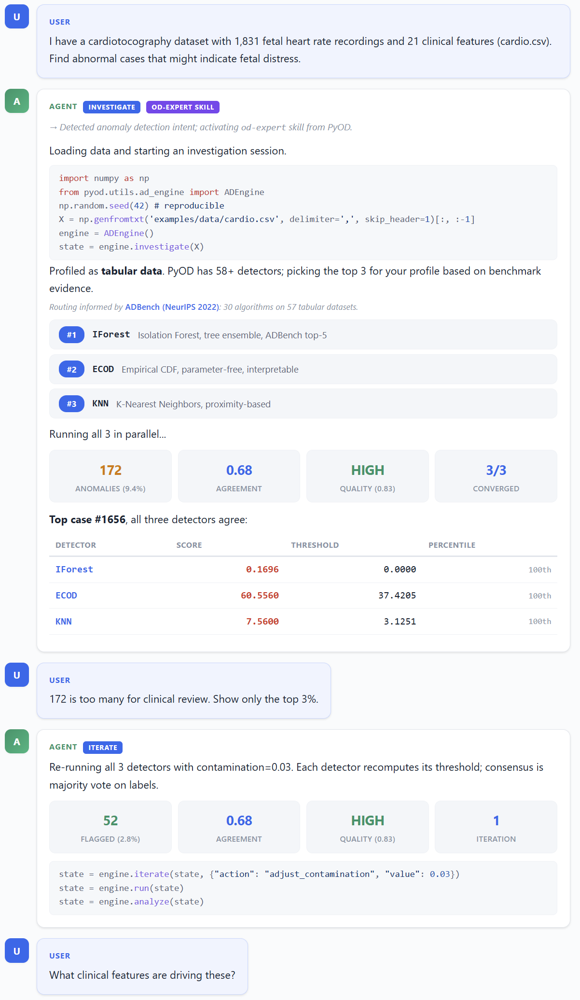

Agentic anomaly detection at scale.
PyOD, established in 2017, is the longest-running and most widely used Python library for anomaly detection, with 38+ million downloads on PyPI and 9K+ stars on GitHub. It serves both academic research and commercial products across finance, healthcare, industrial systems, and space.
PyOD 3 extends the library along two dimensions at once. It spans 60+ detectors across
tabular, time series, graph, text, and image data, and it adds an intelligent
orchestration core (ADEngine) and an agentic investigation layer so AI
agents can drive an expert-level anomaly detection workflow on your data in plain English. The classic
fit/predict API stays unchanged; nothing existing breaks.
GitHub Repository | Star on GitHub | Documentation | Paper (arXiv) | Impact | Back to Open Source
If PyOD is useful in your research or product, please star the GitHub repository to help more practitioners discover it.

Figure: A real 5-turn agentic investigation on the UCI Cardiotocography dataset.
The agent plans the run, compares detectors through ADEngine, assesses quality, and
iterates, all in plain English. See the
full walkthrough
or the
interactive HTML demo.
PyOD 3 is organized around three layers. You can start at any layer and drop down when you need finer control, or move up when you want the library to do the orchestration for you.
| Layer | Name | When to use |
|---|---|---|
| Layer 1 | Classic API | You already know which detector you want and want full control over hyperparameters. |
| Layer 2 | ADEngine |
You want PyOD to choose, compare, and assess detectors automatically, with quality metrics across multiple runs. |
| Layer 3 | Agentic Investigation | You want an AI agent to drive the full anomaly detection workflow through natural conversation. |
Layers 2 and 3 are powered by ADEngine, PyOD's intelligent orchestration core. Layer 3 adds
two agentic activation paths: the od-expert skill for Claude Code
(installed via pyod install skill) and an MCP server
(pyod mcp serve, an alias for python -m pyod.mcp_server) that works with any
MCP-compatible LLM out of the box.
# pip install pyod from pyod.models.iforest import IForest clf = IForest() clf.fit(X_train) y_train_scores = clf.decision_scores_ # training anomaly scores y_test_scores = clf.decision_function(X_test) # test anomaly scores
PyOD 3 ships 60+ detectors under one consistent API. You no longer need separate libraries for different data modalities.
| Modality | What is covered |
|---|---|
| Tabular | Classical statistical, proximity-based, probabilistic, and deep learning detectors (ECOD, COPOD, IForest, KNN, LOF, PCA, AutoEncoder, DeepSVDD, and more). |
| Time series | TimeSeriesOD windowed bridge, MatrixProfile, SpectralResidual, KShape, SAND, LSTMAD, AnomalyTransformer. |
| Graph | DOMINANT, CoLA, CONAD, AnomalyDAE, GUIDE, Radar, ANOMALOUS, SCAN (PyTorch Geometric input). |
| Text / Image | EmbeddingOD and MultiModalOD pipelines via foundation model encoders (sentence-transformers, OpenAI, HuggingFace). |
Routing across modalities is benchmark-informed using ADBench, TSB-AD, BOND, and NLP-ADBench, so the engine can recommend appropriate detectors for the data at hand rather than defaulting to one family.
Selected highlights. The full impact page on Read the Docs tracks citations, enterprise deployments, patents, books, courses, and international tutorials.
| Space & science | European Space Agency OPS-SAT spacecraft telemetry benchmark (Nature Scientific Data, 2025) uses PyOD for all 30 anomaly detection algorithms. |
| Enterprise deployment | Walmart (1M+ daily pricing updates, KDD 2019), Databricks (Kakapo framework integrating PyOD with MLflow / Hyperopt; insider-threat detection solution), IQVIA (123K+ pharmacy claims), Altair AI Studio, Ericsson (patent WO2023166515A1). |
| Books | Outlier Detection in Python (Brett Kennedy, Manning); Handbook of Anomaly Detection with Python (Chris Kuo, Columbia); Finding Ghosts in Your Data (Kevin Feasel, Apress). |
| Courses | DataCamp Anomaly Detection in Python (19M+ platform learners), Manning liveProject, O'Reilly video edition, multiple Udemy courses. |
| Podcasts | Talk Python To Me #497, Real Python Podcast #208. |
| International | Tutorials in 5 non-English languages: Chinese (CSDN, Zhihu, Sohu, Jiqizhixin, aidoczh.com full doc translation), Japanese, Korean, German, Spanish. |
If you use PyOD in a scientific publication, please cite the PyOD 2 paper (the companion paper for the intelligent model selection work) and, for the original library, the JMLR paper.
@inproceedings{chen2025pyod,
title = {PyOD 2: A Python Library for Outlier Detection with LLM-powered Model Selection},
author = {Chen, Sihan and Qian, Zhuangzhuang and Siu, Wingchun and Hu, Xingcan
and Li, Jiaqi and Li, Shawn and Qin, Yuehan and Yang, Tiankai
and Xiao, Zhuo and Ye, Wanghao and others},
booktitle = {Companion Proceedings of the ACM on Web Conference 2025},
pages = {2807--2810},
year = {2025}
}
@article{zhao2019pyod,
title = {PyOD: A Python Toolbox for Scalable Outlier Detection},
author = {Zhao, Yue and Nasrullah, Zain and Li, Zheng},
journal = {Journal of Machine Learning Research},
year = {2019},
volume = {20},
number = {96},
pages = {1--7}
}